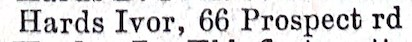
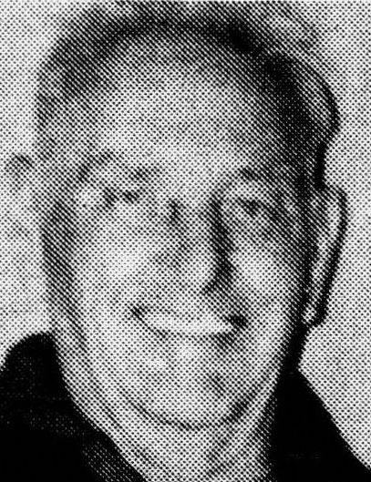
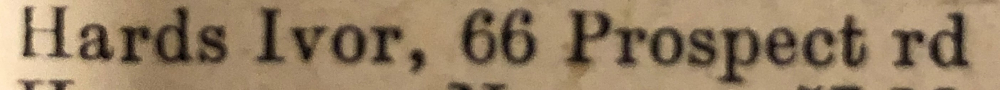
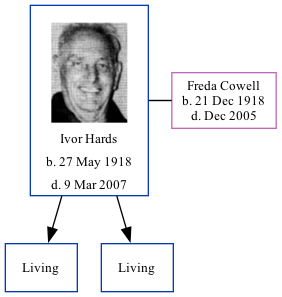

Ivor Hards 1918 - 2007 [ Home ] | [ Calendar ] | [ Surnames Index ] | [ Family History ]Ivor Hards , the husband of Freda Violet Cowell (the aunt of Nigel Horne ), was born in Cwmcarn, Monmouthshire, Wales on May 27, 19181,2,3,4 and. He married Freda (with whom he had 2 surviving children Derek Ivor Lawrence and Frederick J ) at Registry Office, Ramsgate, Kent, England on Sep 7, 19385 .
Throughout his life, Ivor lived in several places: at 49 Jamesville in Cwmcarn on Jun 19, 19219 ; on The Hut Bungalow, West Dumpton Lane in Ramsgate on Sep 29, 19391 ; on 66 Prospect Road, Minster, Thanet, Kent in 19598 and in 19637 ; and at 106 Tothill Street, Minster, Thanet, Kent in 20036 .
Ivor appeared in 2 newspapers: in Isle of Thanet Gazette on 28 Aug 1998 on page 002 (https://www.findmypast.com/image-viewer?issue=BL/0004721/19980828&page=0002&article=002&stringtohighlight=ivor%20hards ) and in Isle of Thanet Gazette on 9 Sep 1988 on page 019 (https://www.findmypast.com/image-viewer?issue=BL/0004721/19880909&page=0019&article=019&stringtohighlight=ivor%20hards ).
He died on Mar 9, 2007 in Minster, Thanet, Kent4 (age: 89).
Citations 1939 Register - Findmypast (was recorded at this address) England & Wales births 1837-2006 - Findmypast England & Wales, Birth Index: 1916-2005 Online publication - Provo, UT, USA: The Generations Network, Inc., 2008.Original data - General Register Office. England and Wales Civil Registration Indexes. London, England: General Register Office. © Crown copyright. Published by permission of the Cont England & Wales, Death Index: 1984-2005 Online publication - Provo, UT, USA: The Generations Network, Inc., 2007.Original data - General Register Office. England and Wales Civil Registration Indexes. London, England: General Register Office. © Crown copyright. Published by permission of the Cont England & Wales, Marriage Index: 1916-2005 Online publication - Provo, UT, USA: The Generations Network, Inc., 2009.Original data - General Register Office. England and Wales Civil Registration Indexes. London, England: General Register Office. © Crown copyright. Published by permission of the Cont From the Electoral Register 1963 Kelly's Thanet Directory 1959 Kelly's Thanet Directory 1921 Census Of England & Wales - Findmypast (was age 3 and the son of the head of the household) Media 1963 Kelly's Thanet Directory  Ivor Hards  1959 Kelly's Thanet Directory  England & Wales marriages 1837-2008 Transcription - BMD-M-1938-3-AZ-000690-133 England & Wales births 1837-2006 Transcription - BMD-B-1918-2-AZ-000525-145 1921 Census Of England & Wales - GBC/1921/RG15/26359/0313/10 Family Tree Interactive Map
Map
Generated by ged2site . Last updated on Feb 18, 2025